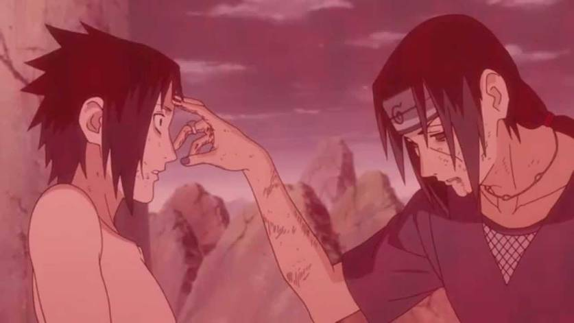
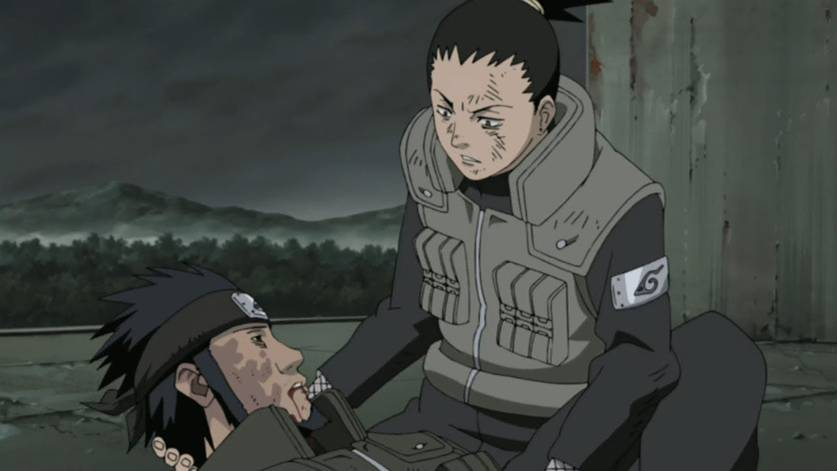

Naruto - 3 personagens muito queridos do anime que morreram
A trajetória de Naruto é repleta de mortes dolorosas e muita música instrumental triste para emocionar o
espectador
por Gabriel Dias, do mundo loucura
17/10/2023 23:46
Os fãs de Naruto foram pegos de surpresa com a notícia da morte de Kurama, o poderoso espírito que
habitava o corpo do protagonista. A despedida da raposa de nove caudas emocionou os fãs e fez seu nome
despontar entre os termos mais comentados das redes sociais.
Mas fã de Naruto é duro como rocha e está acostumado a perdas no elenco da série, então decidimos
relembrar algumas mortes que deixaram nossos corações apertados nesse mundo ninja muito cruel. Vamos à
lista!
Jiraiya é um dos mestres de Naruto e é quase como um segundo pai para o ninja loiro. Ele foi
responsável por parte do crescimento do protagonista, desbloqueando o seu chacra e ensinando a
técnica do pai de Naruto, o Rasengan. E, como era de se esperar, teve uma morte muito trágica,
para encher nossos olhos de lágrimas.
Após o salto no tempo que levou a Naruto Shippuden, Jiraiya se infiltrou em uma vila para
investigar a Akatsuki, e reencontrou seus antigos pupilos. Em vez de celebrarem todos juntos com
uma cervejinha e um lámen, Jiraiya foi encurralado pelos antigos alunos e descobriu que eles são
os responsáveis pela fundação da Akatsuki. No fim, Jiraiya escolheu se sacrificar para mandar
informações para Naruto e os demais.
2. Itachi

Naruto/Studio Pierrot/Reprodução
Essa é mais uma prova de que o Masashi Kishimoto estava tentando deliberadamente fazer você
chorar. Itachi Uchiha era o irmão do Sasuke e havia um grande mistério sobre os motivos que o
levaram a destruir o clã dos Uchiha.
Em vez de uma forte psicopatia, nos foi revelado que Itachi fez tudo aquilo para salvar seu
irmão e para impedir um golpe militar. Essa informação sobre as boas intenções de Itachi
infelizmente chegou tarde demais, pois o Sasuke só descobriu tudo isso depois que seu irmão já
tinha comprado uma passagem só de ida para o outro plano.
3. Asuma

Naruto/Studio Pierrot/Reprodução
Asuma foi um dos senseis dos ninjas logo no começo da série, e era o responsável pelo time formado
por Shikamaru, Ino e Choji. Sua morte veio durante todo o confronto com a Akatsuki, pois ele saiu em
uma missão de reconhecimento e acabou esbarrando em Hidan.
O membro da Akatsuki era especialista em maldições e também tinha a habilidade de "transferir" um
dano causado em seu corpo para outra pessoa. Hidan se deu um golpe muito forte, sobreviveu por conta
de seus poderes e causou um dano irreversível em Asuma. Mais uma morte triste para a lista.